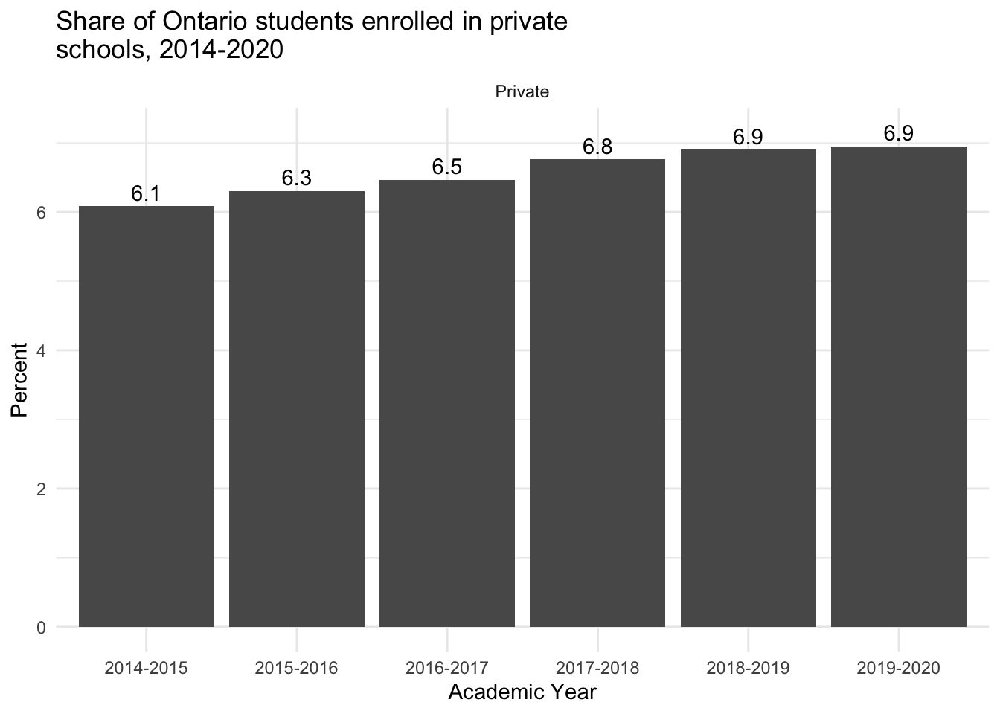
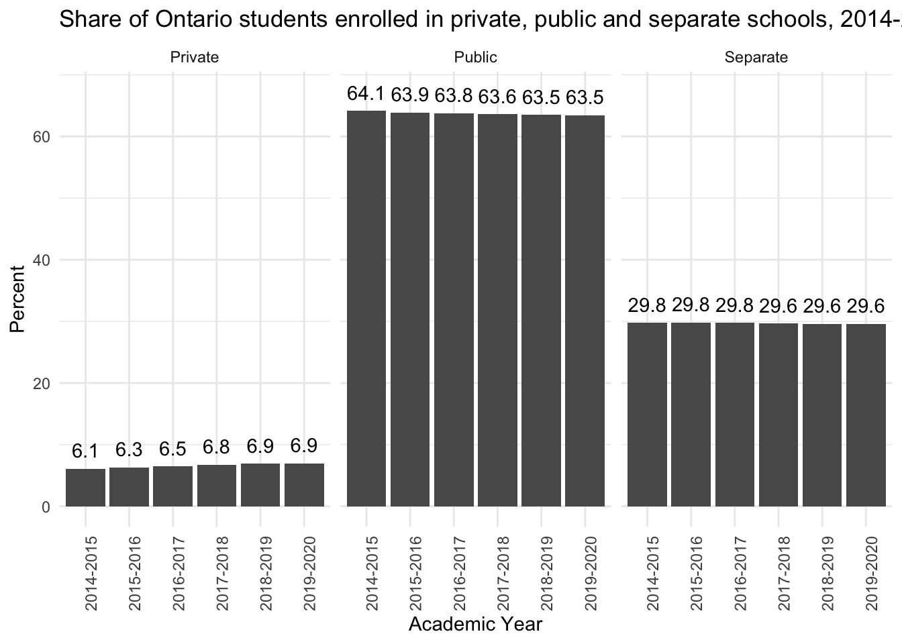

Did you know that the share of Ontario students attending private schools is creeping steadily up? Here are the numbers and then the story of why I came to cobble this together below.
So, to be clear, this is the share of all students (elementary and secondary, Catholic and public) in Ontario who are attending private schools. So, this does account for population growth. It’s definitely peripheral, but there’s a signal here too.
I’ve had reason to think a lot about the quality of public education lately. Our five-year old has entered Grade 1 this year and so school has been a huge focus. Plus, with the lockdowns last year, we got to (had to?) take part in a lot of her schooling, more than in normal years. Mostly we’ve been really happy with the quality of the education, but there are ways in which the experience has been underwhelming. On top of that, there have been more than a few skirmishes in the culture wars in the news lately on the field of public education.
Close to home, the Waterloo Region District School Board has found itself in trouble over a review of the district’s libraries for books deemed “harmful”. The Board’s description of the process is here. At the Toronto District School Board, the superintendent felt a student book club should not be discussing the recently published memoirs by Marie Henein, the lawyer who defended Jian Ghomeshi, nor apparently a book by Nobel Peace Prize winning activist Nadia Murad. At the same time, the government of Ontario is “destreaming” Ontario Grade 9 classes starting next year.
I’ll admit: the combination of stories like this make me, a parent of two kids with a household that values learning pretty intensely, a bit nervous about the quality of education my kids are going to get going forward.
The combination of policies above arguably make public education less attractive to families with motivated parents and students because there are potentially fewer opportunities to push the limits of their education. We’ve even floated - not very seriously mind you - the idea of private school and even homeschooling.
The economist Albert Hirschman described situations like this in a classic work Exit, Voice and Loyalty.1
Consumers of policies, services or goods face a problem when the quality begins to decline. Namely, you have limited tools to express your displeasure at the decline. You can raise your “voice” and express your displeasure inside the organization or to the organization. Or you can take off to the next firm (or, say, political party) and take your money elsewhere. Loosely, exit is the world of economics and voice is the world of politics.
Voice is more useful to organizations because it provides reasons for the decline. But one of the tragedies of the phenomenon, especially in regards to things like public education is that those who might be most capable of using their voice to voice concern about the decline in quality simply leave the system cough to a private school system. But an organization like a public school system doesn’t have a super strong incentive to change its behaviours. I mean, look at the numbers, the vast majority of the consumers of education are in the system.
And to be sure, most consumers of education are price conscious, not quality conscious, so they are going to stay. But the odds are increasing that most people will be staying in a system where a growing portion of the population (perhaps the most quality conscious) will have exited the system.
There’s a way in which that leaves a less-than-optimal public education system in Ontario.
The data I’ve cobbled together stop in the academic year 2019-2020, so it will certainly be interesting to see what the next year or two bring, post-pandemic. On the one hand, it’s crystal clear how essential teachers and child-care workers are to …everything. And doubtless many will have been totally impressed at the level of commitment in extremely adverse situations. On the other hand, it’s possible that a greater number of families may have gotten a glimpse of how public education functions in Ontario and been less than impressed.
On the data
You would sort of think that data like this would be readily available and it was-ish (to use the parlance of our times). Ontario publishes data on private school enrolment here and data on public school enrolment here but of course what we want is a combined dataset.
I took a couple of hours to force the two data-sets together and the final data are published for posterity here.
Update
The data allow us to compare shares of enrolment by Catholic, public and private status so we can see whether Catholic schools are losing students at the same rate as public schools.

Catholic schools’ share is ever so slightly lower now than in 2014. It is tough to say if that is noise or a signal.
Footnotes
Albert O. Hirschman, Exit, Voice, and Loyalty: Responses to Decline in Firms, Organizations, and States (Harvard University Press, 1970).↩︎